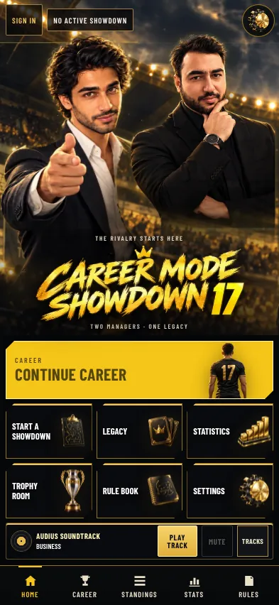
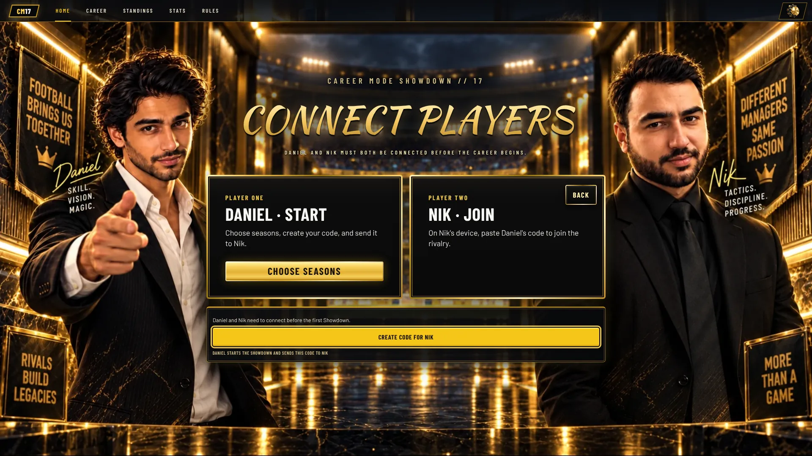
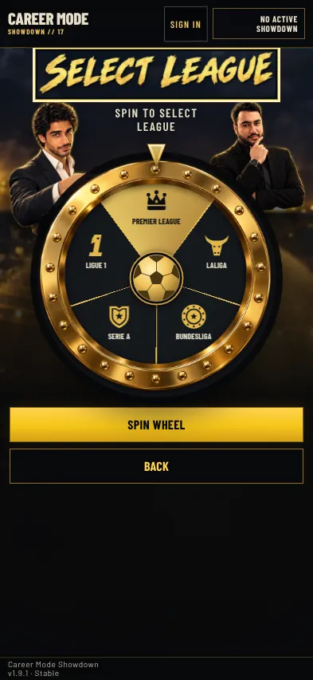
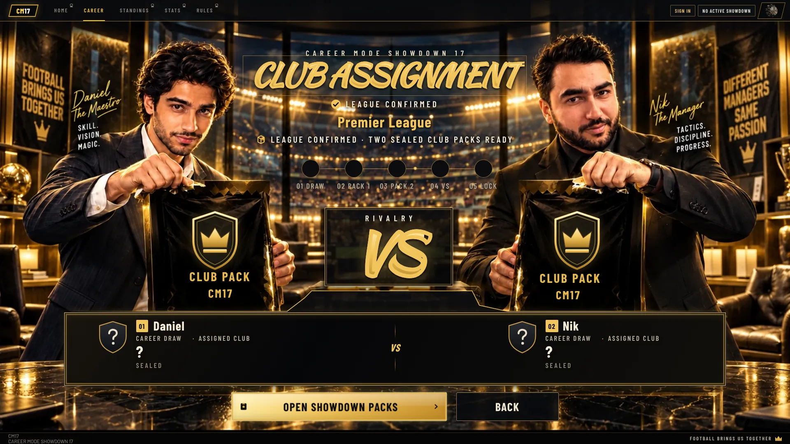
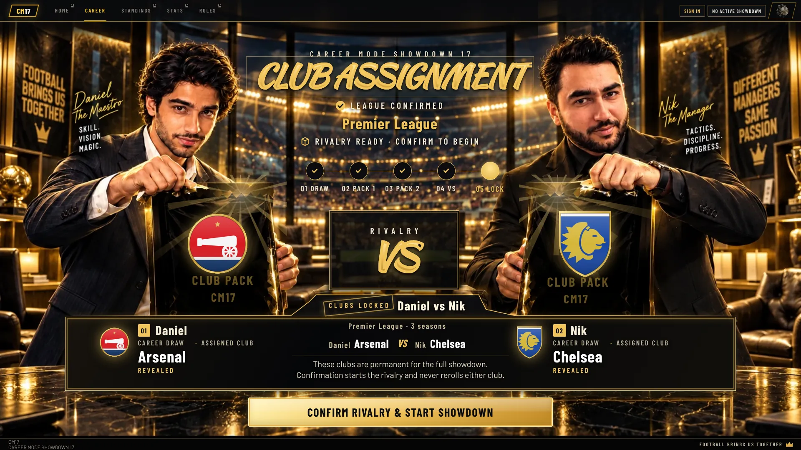
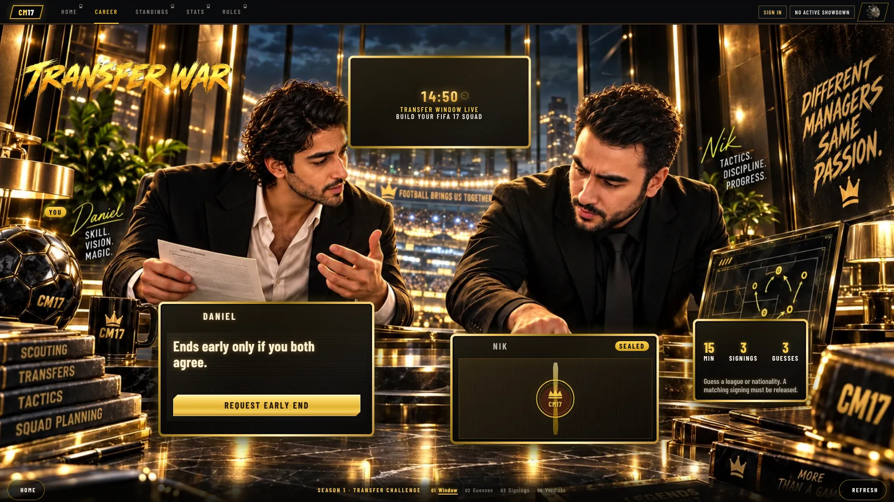
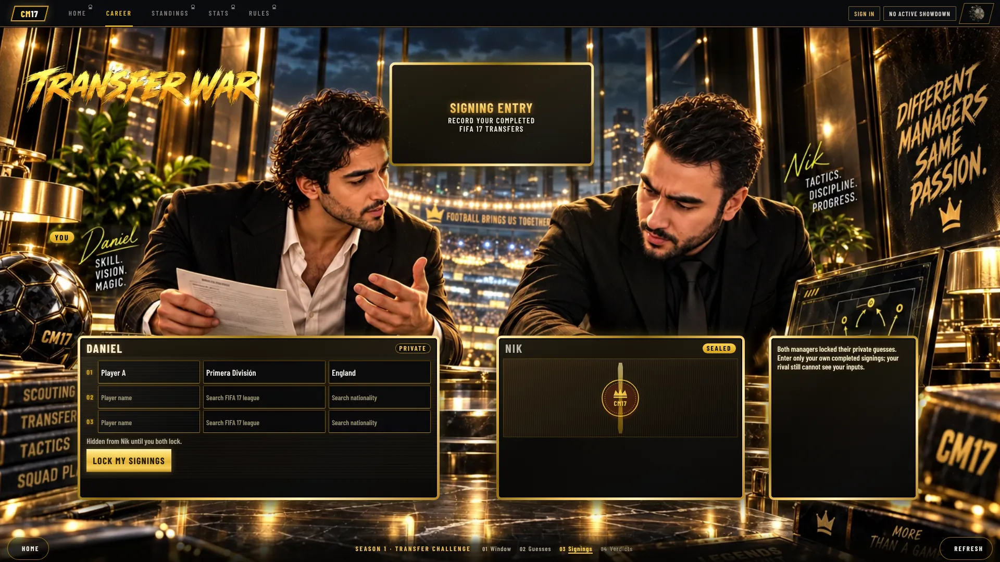
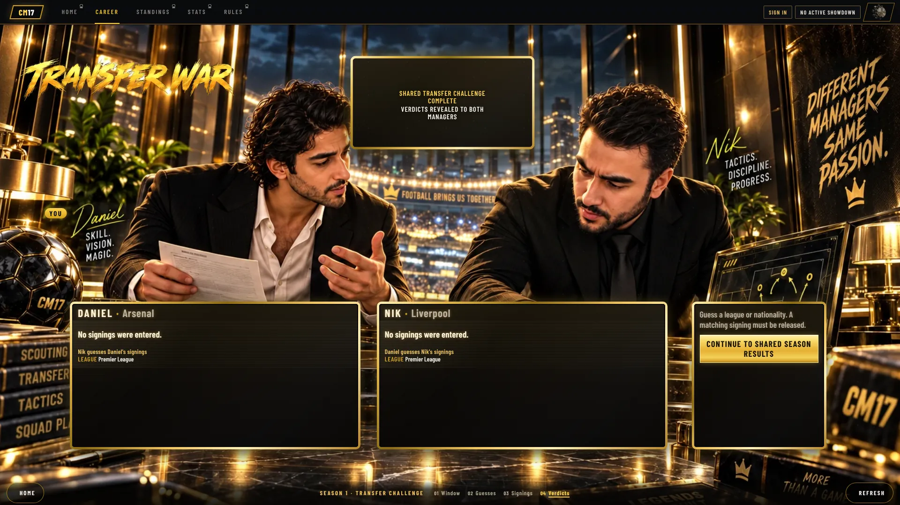
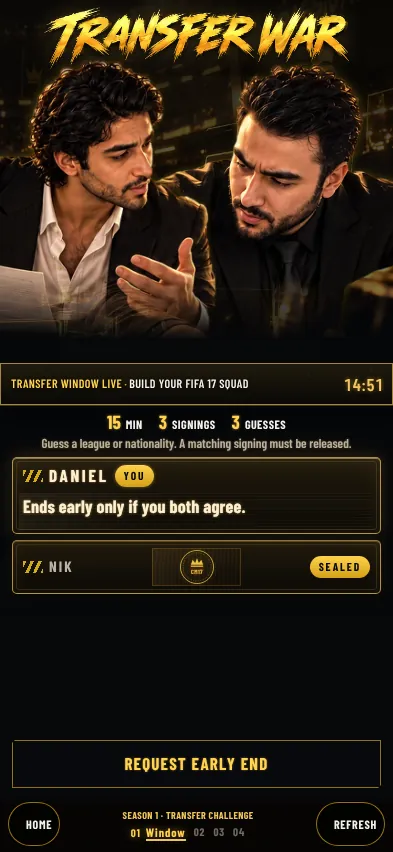
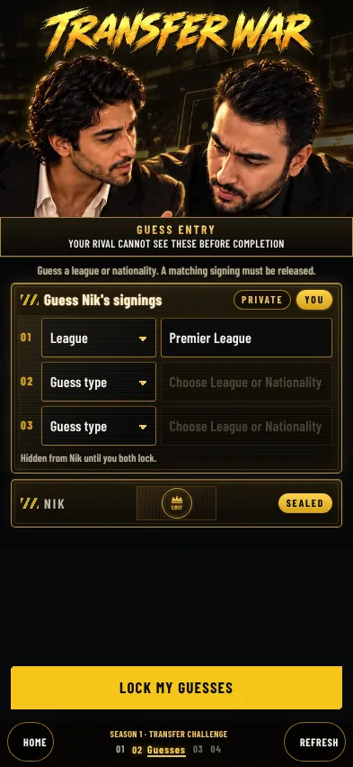

r76 gallery refresh 69 before/after pairs · desktop 1920×1080 · phone 393×852 · phone sideways 844×390 for Home, Career Statistics, Trophy Room and Standings. Tap any picture for full resolution.
Before: main @ 3f6b1c97ec20bd74c74a8330c0222511ecc02f6f8964ede717bc1f1a128553c9ee1fbe8f6c866974
Local fixture renders only. External provider and media requests are blocked; cached fonts are served locally. These images grant no production, SSJR or MDP proof. No game source or existing test was changed. Loading and screen transition flashes require a separate motion audit.
Pixel comparison inventory · Home quota notice geometry
Home New Showdown Connect Players Select League Club Transfer Challenge Season Results Standings Final Winner — Daniel Final Winner — Nik Final Winner — Draw Final Winner — completion pending Champion after published Results Rivalry Statistics Rivalry Statistics — mid Showdown Legacy Trophy Room Career Statistics Rule Book Settings Home — season 2 of 3 Standings — THIS SHOWDOWN mid Showdown Home — free online limit Connect Players — free online limit Loading Home Same local input on both pinned source heads. Settled viewport capture.
Desktop 1920x1080 home-desktop-1920x1080.webp · Pixels differ · 0.051% above 16/255; assess visually
Before · live r75 main After · final r76 workbench Phone 393x852 home-phone-393x852.webp · Identical pixels
Before · live r75 main After · final r76 workbench 
Phone sideways 844x390 home-phone-844x390.webp · Identical pixels
Before · live r75 main After · final r76 workbench New Showdown Signed-out setup state. The phone retains the generic CAREER MODE header above the artwork; confirm intended presentation.
Desktop 1920x1080 new-showdown-desktop-1920x1080.webp · Identical pixels
Before · live r75 main After · final r76 workbench Phone 393x852 new-showdown-phone-393x852.webp · Pixels differ · 0.013% above 16/255; assess visually
Before · live r75 main After · final r76 workbench Connect Players Same local input on both pinned source heads. Settled viewport capture.
Desktop 1920x1080 connect-players-desktop-1920x1080.webp · Identical pixels
Before · live r75 main After · final r76 workbench 
Phone 393x852 connect-players-phone-393x852.webp · Identical pixels
Before · live r75 main After · final r76 workbench Select League Unassigned clubs make the real League route available. Phone has a generic header and a large dark lower area; retained for review.
Desktop 1920x1080 select-league-desktop-1920x1080.webp · Pixels differ · 0.102% above 16/255; assess visually
Before · live r75 main After · final r76 workbench Phone 393x852 select-league-phone-393x852.webp · Identical pixels
Before · live r75 main 
After · final r76 workbench Club Real Club ready and confirmation stages. Phone retains a large empty stadium band above the small manager figures; confirm intended composition.
Desktop 1920x1080 club-desktop-1920x1080.webp · Identical pixels
Before · live r75 main 
After · final r76 workbench Desktop 1920x1080 · Confirmed clubs club--confirmation-desktop-1920x1080.webp · Identical pixels
Before · live r75 main After · final r76 workbench 
Phone 393x852 club-phone-393x852.webp · Identical pixels
Before · live r75 main After · final r76 workbench Phone 393x852 · Confirmed clubs club--confirmation-phone-393x852.webp · Identical pixels
Before · live r75 main After · final r76 workbench Transfer Challenge Read-only transfer provider snapshots. The live countdown can differ by a second between captures. In the phone Signing Entry picture, the sticky LOCK MY SIGNINGS action meets/overlaps the bottom edge of the rival sealed card; review its intended spacing.
Desktop 1920x1080 transfer-challenge-desktop-1920x1080.webp · Pixels differ · 0.031% above 16/255; assess visually
Before · live r75 main 
After · final r76 workbench Desktop 1920x1080 · Guess entry (live) transfer-challenge--guess-entry-desktop-1920x1080.webp · Identical pixels
Before · live r75 main After · final r76 workbench Desktop 1920x1080 · Signing entry (live) transfer-challenge--signing-entry-desktop-1920x1080.webp · Identical pixels
Before · live r75 main After · final r76 workbench 
Desktop 1920x1080 · Verdicts (completed) transfer-challenge--verdicts-desktop-1920x1080.webp · Identical pixels
Before · live r75 main After · final r76 workbench 
Phone 393x852 transfer-challenge-phone-393x852.webp · Identical pixels
Before · live r75 main 
After · final r76 workbench Phone 393x852 · Guess entry (live) transfer-challenge--guess-entry-phone-393x852.webp · Identical pixels
Before · live r75 main 
After · final r76 workbench Phone 393x852 · Signing entry (live) transfer-challenge--signing-entry-phone-393x852.webp · Identical pixels
Before · live r75 main After · final r76 workbench Phone 393x852 · Verdicts (completed) transfer-challenge--verdicts-phone-393x852.webp · Identical pixels
Before · live r75 main After · final r76 workbench Season Results Same local input on both pinned source heads. Settled viewport capture.
Desktop 1920x1080 season-results-desktop-1920x1080.webp · Pixels differ · 0.23% above 16/255; assess visually
Desktop 1920x1080 · Review and actions at bottom season-results--bottom-desktop-1920x1080.webp · Pixels differ · 0.21% above 16/255; assess visually
Phone 393x852 season-results-phone-393x852.webp · Identical pixels
Phone 393x852 · Review and actions at bottom season-results--bottom-phone-393x852.webp · Identical pixels
Standings Same local input on both pinned source heads. Settled viewport capture.
Desktop 1920x1080 standings-desktop-1920x1080.webp · Identical pixels
Before · live r75 main After · final r76 workbench Phone 393x852 standings-phone-393x852.webp · Identical pixels
Phone sideways 844x390 standings-phone-844x390.webp · Identical pixels
Final Winner — Daniel Same local input on both pinned source heads. Settled viewport capture.
Desktop 1920x1080 final-winner-desktop-1920x1080.webp · Identical pixels
Before · live r75 main After · final r76 workbench Phone 393x852 final-winner-phone-393x852.webp · Identical pixels
Before · live r75 main After · final r76 workbench Phone 393x852 · Phone honours final-winner--honours-phone-393x852.webp · Identical pixels
Before · live r75 main After · final r76 workbench Final Winner — Nik Same local input on both pinned source heads. Settled viewport capture.
Desktop 1920x1080 final-winner-nik-desktop-1920x1080.webp · Identical pixels
Before · live r75 main After · final r76 workbench Phone 393x852 final-winner-nik-phone-393x852.webp · Identical pixels
Before · live r75 main After · final r76 workbench Final Winner — Draw Same local input on both pinned source heads. Settled viewport capture.
Desktop 1920x1080 final-winner-draw-desktop-1920x1080.webp · Identical pixels
Phone 393x852 final-winner-draw-phone-393x852.webp · Identical pixels
Before · live r75 main After · final r76 workbench Final Winner — completion pending Same local input on both pinned source heads. Settled viewport capture.
Desktop 1920x1080 final-winner-pending-desktop-1920x1080.webp · Identical pixels
Phone 393x852 final-winner-pending-phone-393x852.webp · Identical pixels
Before · live r75 main After · final r76 workbench Champion after published Results Champion reached by the real published Results route; compare the season review exit.
Desktop 1920x1080 champion-review-season-desktop-1920x1080.webp · Pixels differ · 0.895% above 16/255; assess visually
Phone 393x852 champion-review-season-phone-393x852.webp · Pixels differ · 3.416% above 16/255; assess visually
Rivalry Statistics Same local input on both pinned source heads. Settled viewport capture.
Desktop 1920x1080 rivalry-desktop-1920x1080.webp · Pixels differ · 0.085% above 16/255; assess visually
Phone 393x852 rivalry-phone-393x852.webp · Identical pixels
Rivalry Statistics — mid Showdown Same mid-Showdown snapshot as Standings. Transfer summaries are intentionally absent from this fixture.
Desktop 1920x1080 rivalry-mid-showdown-desktop-1920x1080.webp · Pixels differ · 2.777% above 16/255; assess visually
Phone 393x852 rivalry-mid-showdown-phone-393x852.webp · Pixels differ · 13.858% above 16/255; assess visually
Legacy Same local input on both pinned source heads. Settled viewport capture.
Desktop 1920x1080 legacy-desktop-1920x1080.webp · Identical pixels
Before · live r75 main After · final r76 workbench Phone 393x852 legacy-phone-393x852.webp · Identical pixels
Trophy Room Repository multi-Showdown career fixture; phone MORE is opened by coordinate touch on the visible control in both versions.
Desktop 1920x1080 trophy-room-desktop-1920x1080.webp · Pixels differ · 0.004% above 16/255; assess visually
Phone 393x852 trophy-room-phone-393x852.webp · Identical pixels
Phone 393x852 · Career details MORE trophy-room--more-phone-393x852.webp · Identical pixels
Phone sideways 844x390 trophy-room-phone-844x390.webp · Identical pixels
Career Statistics Repository multi-Showdown career fixture; no local active Showdown. Compare the CURRENT RIVALRY STATISTICS button.
Desktop 1920x1080 career-stats-desktop-1920x1080.webp · Pixels differ · 2.081% above 16/255; assess visually
Phone 393x852 career-stats-phone-393x852.webp · Pixels differ · 1.075% above 16/255; assess visually
Phone sideways 844x390 career-stats-phone-844x390.webp · Pixels differ · 4.425% above 16/255; assess visually
Rule Book Same local input on both pinned source heads. Settled viewport capture.
Desktop 1920x1080 rule-book-desktop-1920x1080.webp · Identical pixels
Before · live r75 main After · final r76 workbench Phone 393x852 rule-book-phone-393x852.webp · Identical pixels
Settings Same local input on both pinned source heads. Settled viewport capture.
Desktop 1920x1080 settings-desktop-1920x1080.webp · Identical pixels
Phone 393x852 settings-phone-393x852.webp · Identical pixels
Home — season 2 of 3 Shared season 2 of 3: compare the header chip and Continue tile against the locally lagging season 1 save.
Desktop 1920x1080 home-season-2-of-3-desktop-1920x1080.webp · Pixels differ · 0.194% above 16/255; assess visually
Before · live r75 main After · final r76 workbench Phone 393x852 home-season-2-of-3-phone-393x852.webp · Pixels differ · 0.104% above 16/255; assess visually
Before · live r75 main After · final r76 workbench Phone sideways 844x390 home-season-2-of-3-phone-844x390.webp · Pixels differ · 0.129% above 16/255; assess visually
Standings — THIS SHOWDOWN mid Showdown One committed season of 3 (Daniel 6–3 Nik), with History absent and verified progression present. Compare THIS SHOWDOWN readiness and rows.
Desktop 1920x1080 standings-mid-showdown-desktop-1920x1080.webp · Pixels differ · 1.326% above 16/255; assess visually
Phone 393x852 standings-mid-showdown-phone-393x852.webp · Pixels differ · 12.115% above 16/255; assess visually
Phone sideways 844x390 standings-mid-showdown-phone-844x390.webp · Pixels differ · 8.105% above 16/255; assess visually
Home — free online limit A local resource-exhausted provider double triggers the real budget layer. r75 has no automatic Home notice. See quota-check.json for notice/control geometry.
Desktop 1920x1080 home-free-limit-desktop-1920x1080.webp · Pixels differ · 0.799% above 16/255; assess visually
Before · live r75 main After · final r76 workbench Phone 393x852 home-free-limit-phone-393x852.webp · Pixels differ · 6.54% above 16/255; assess visually
Phone sideways 844x390 home-free-limit-phone-844x390.webp · Pixels differ · 5.385% above 16/255; assess visually
Connect Players — free online limit Quota remains active when opening Connect Players. Compare inline copy and any leaked Home notice.
Desktop 1920x1080 connect-players-free-limit-desktop-1920x1080.webp · Pixels differ · 0.008% above 16/255; assess visually
Phone 393x852 connect-players-free-limit-phone-393x852.webp · Identical pixels
Loading Loading captured during startup; this picture does not audit transition flashes.
Desktop 1920x1080 loading-desktop-1920x1080.webp · Identical pixels
Before · live r75 main After · final r76 workbench Phone 393x852 loading-phone-393x852.webp · Identical pixels